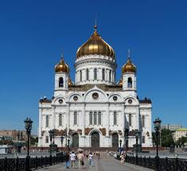
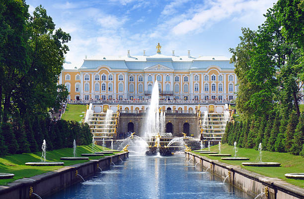

Kremlin de Moscou
O Kremlin fica bem no coração de Moscou e tem uma rica história, tendo servido de residência para os tsares por séculos

Catedral de Cristo Salvador
O destino dado a esta igreja no século 20 simboliza o tratamento dispensado pelo governo soviético à religião no país.

Petergof
Esta é a mais bela residência tsarista e um verdadeiro símbolo da era imperial.

Palácio de Inverno
Este lugar é famoso por dois motivos. O primeiro é que ele abriga o Hermitage, o maior museu da Rússia. O segundo é a importância do palácio para a Revolução.